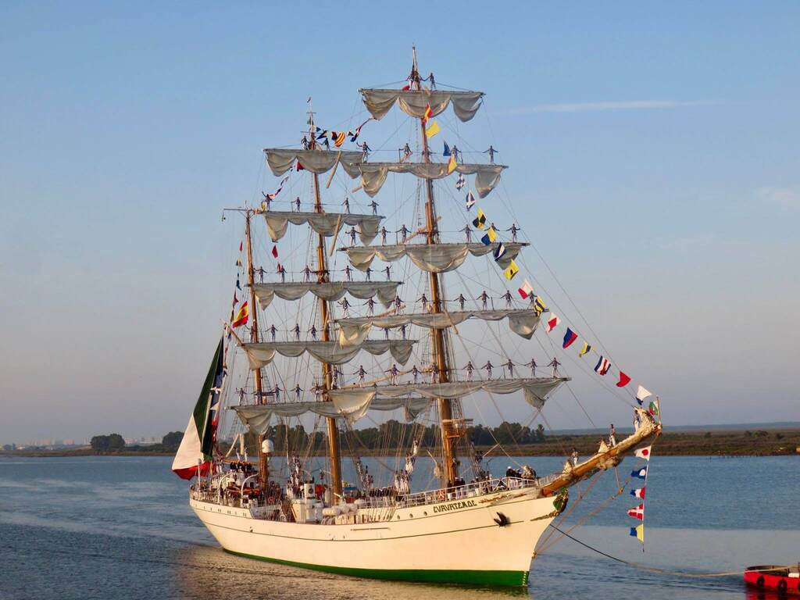
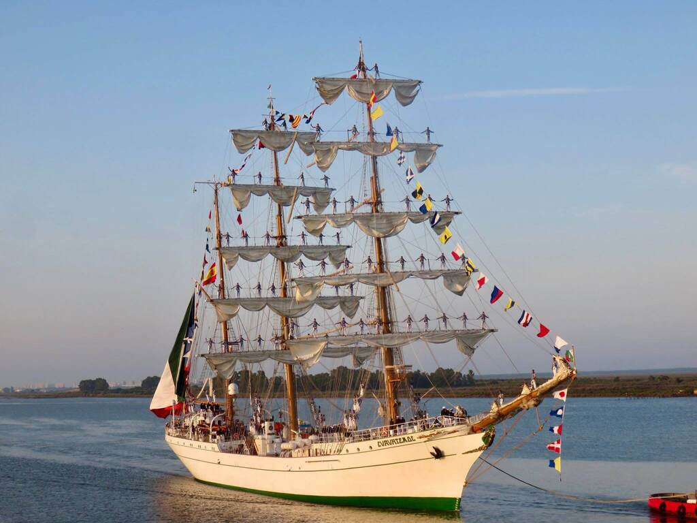
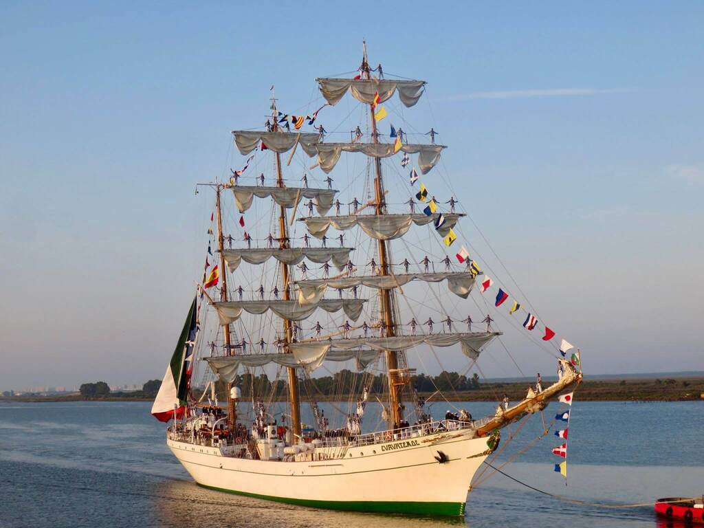
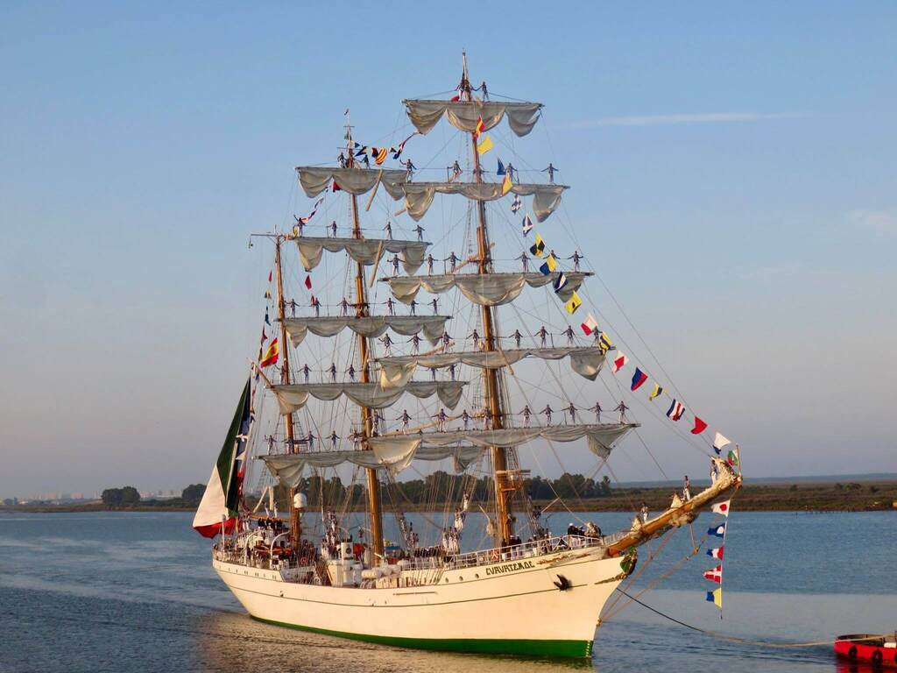

 

Mexico is a norht american country, boundend on the north by United States and on the south by Guatemala. Made up of 32 states, Mexico is a country of contrasts and full of cultural wealth. On this website you can find some of the hidden wonders of Mexico and you will begin to fall in love with its magical charm.

A must see place in Mexio city is the Fine Arts Palace. Its construction began in 1904 directed by the Italian architect Adamo Boari who brought a large number of Italian marble carvers. The architectural mix of art nouveau for outdoors and art deco for indoors give it a captivating beauty. The palace is home to the National Opera, the Philharmonic Orchestra, the National Museum of Architecture and the National Museum of Fine Arts.
The history of Mexico is full of stories and legends that enrich the national spirit. The national shield that appears in the center of the flag is made up of 3 elements, the eagle, the cactus and the snake. The legend of Tenochtitlan foundation says that Huitzilopochtli the god, asked the Aztec people to leave their lands and settle in the place where they would find an eagle perched on a cactus. Later, after the independence began, the snake was added as part of the story, although the first flags did not have this symbol since it was not part of the legend. The eagle hunting the snake symbolizes the victory of the sun over its enemies.
Mexican Flag
The three colors of the Mexican flag from left to right are green, which represents independence, white, which represents religion, and red, which represents the national union.
One of the most fascinating popular Mexican customs is undoubtedly the "Day of the Dead" festival. This festival is characterized by visiting the deceased relatives who are brought their favorite food, drinks and their tombstone is decorated with colorful flowers and candles.
Woman dressed up as Catrina
The festival comes from the mixture between the offerings to the dead typical of the pre-Hispanic culture and the Catholic festival of the "Day of the Dead". Therefore, the memory of the deceased is celebrated while offerings are sought for the deceased to have a pleasant life in the afterlife. It is common for parades to be held and people put on Catrin and Catrina makeup, representing a pompous and conceited deceased. This festival is celebrated on November the 2nd. and is more important and traditional in the southern states of Mexico.